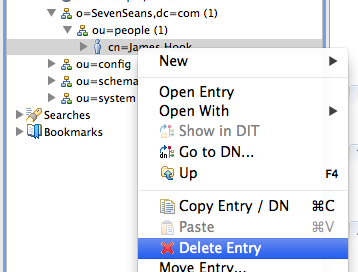

ApacheDS 2.0
Downloads
Documentation
- Basic User Guide
- Advanced User Guide
- Developer Guide
- Kerberos User Guide
- Configuration
- JavaDocs
- Cross-Reference
Support
Community
About Apache
2.1.2 - Deleting Entries
Deleting entries is quite simple : you just need to provide their DN, and require for the deletion of the associated entry. Although there are a few conditions that must be fulfilled for this operatio to be successful :
- The entry must exist;
- It should not have any children;
- The user requiring the deletion must have enough priviledge to do so
Assuming those three conditions being fulfilled, you can proceed with the deletion. We will show how it works on the entry we added in the previous chapter.
Using the command line
You have to use an authorized user to delete the entry, here, cn=Horatio Nelson,ou=people,o=sevenSeas :
With an LDIF file (Captain hook delete) with an appropriate change entry, this can easily be accomplished, if the bind user is allowed to do so. Here is the content of this LDIF file :
# File captain_hook_delete.ldif
dn: cn=James Hook,ou=people,o=sevenSeas
changetype: delete
and here is the command line to use :
$ ldapdel -h zanzibar -p 10389 -D "cn=Horatio Nelson,ou=people,o=sevenSeas" -w pass \\
-a -f captain_hook.ldif
deleting entry cn=James Hook,ou=people,o=sevenSeas
$
Using Apache Directory Studio
With studio, just select the entry you want to delete, and select the “Delete” menu :

When deleteed, the log windows should contain this message :
#!RESULT OK
#!CONNECTION ldap://localhost:10389
#!DATE 2012-10-30T14:57:47.399
dn: cn=James Hook,ou=people,o=SevenSeans
changetype: delete
Studio allows you to delete entries which have children, but it will first try to delete all the children recursively. There is no such things when you send an LDAP DeleteRequest.